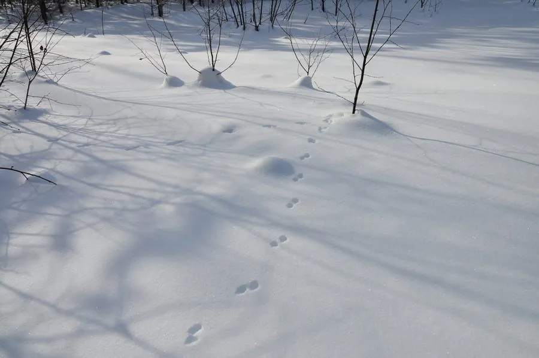

哺乳动物 · 动物界
白鼬 Mustela erminea

环北极分布的小型鼬类，北方种群冬季全身换白毛、仅尾尖保持黑色，动作迅捷，能钻入鼠洞追捕猎物，毛皮曾是王室御用。
- 分类
- 门脊索动物门纲哺乳纲目食肉目科鼬科属鼬属
- 栖息环境
- 森林边缘、草原、苔原、湿地与农田交界，常靠近水源
- 地理分布
- 欧亚大陆北部、北美洲北部，包括格陵兰与部分北极岛屿
- 保护级别
- IUCN 无危（LC）；中国境内属受保护野生动物
物种志
白鼬体形细长，成年体长 17–32 厘米，尾长 4–12 厘米，体重 60–450 克，雄性明显大于雌性，是鼬科中雌雄差异最悬殊的种类之一。夏季背毛棕褐、腹面白色，北方和高海拔种群入冬后换成纯白毛被，仅尾端保持黑色，这种“白袍黑尖”的形象曾被视为王室象征。头小而扁，耳短圆，四肢短，足底有毛。
它们广布于欧亚大陆与北美的森林、草原、苔原和农田边缘，善用鼠类的洞穴，必要时自己挖掘。猎物以田鼠、旅鼠为主，也捕食兔类、鸟类、蛙和昆虫，捕杀时常咬住猎物后颈，并把多余猎物储存在巢中。行动极为敏捷，能跳跃、攀爬和游泳。每年春夏发情，孕期约 9–10 个月（含滞育），每胎 4–9 仔。毛皮贸易曾使其在欧洲局部锐减，现多数地区种群稳定。
形态与习性
- 体长雄性约 22–32 cm，雌性约 17–24 cm
- 体重雄性约 200–450 g，雌性约 60–150 g
- 食性田鼠、旅鼠为主，兼食兔类、鸟类、蛙与昆虫
- 毛色变化北方种群冬季全身变白，仅尾尖保持黑色
- 繁殖春夏交配，孕期含滞育约 9–10 个月，每胎 4–9 仔
- 寿命野外约 3–5 年，饲养下可达 7 年
- 活动节律日夜均活动，以晨昏最活跃，不冬眠
趣味知识
- 白鼬冬季换上纯白毛被，只有尾尖仍是黑的，像蘸了一点墨。
- 在古欧洲，白鼬毛皮被用作法官与王室袍服的镶边，象征纯洁。
- 它体形细长到可以钻进田鼠的洞道，在洞里完成追捕。